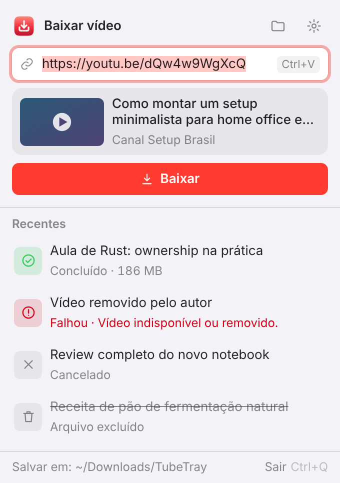
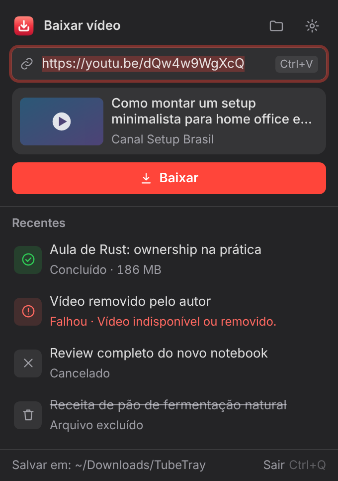

Copie o link.
Clique no ícone.
Pronto, em MP4.
O TubeTray fica na bandeja do Windows ou na barra de menu do Mac e baixa vídeos do YouTube em MP4 com um clique. Grátis, sem anúncios e de código aberto.


Um gesto, e o vídeo está na pasta
Sem abrir site, sem linha de comando. O TubeTray usa o yt-dlp por baixo e entrega um MP4 que abre em qualquer player.
Copie o link
Do navegador, do celular sincronizado ou de onde for. Funciona com vídeos, Shorts e lives gravadas.
Clique no ícone
A janela abre junto à bandeja, já com o link colado e a prévia: miniatura, título e canal.
Baixar
O progresso aparece na lista e no próprio ícone. Ao terminar, você recebe uma notificação.
Feito para ficar fora do caminho
Pequeno, rápido de abrir e com cara de app nativo, no tema claro ou escuro.
Fila e progresso
Cole vários links: eles entram na fila. Velocidade e tempo restante sempre à vista, e dá para cancelar a qualquer momento.
Notificação ao concluir
Aviso do sistema com o título do vídeo e um ícone de sucesso ou falha. Erros explicados em português.
Histórico
Os últimos downloads ficam salvos, com atalhos para abrir o vídeo ou mostrá-lo na pasta. Se você apagar um arquivo, ele aparece riscado.
Sempre atualizado
O yt-dlp é baixado na primeira vez e atualizado com um clique nos Ajustes, sem reinstalar o app.
Instalar
Os instaladores ficam nas versões do GitHub. Eles ainda não têm assinatura de código, então o sistema pede uma confirmação na primeira vez.
Windows 10 e 11
- Baixe e abra o
TubeTray_…_x64-setup.exe. - Se o SmartScreen avisar, clique em Mais informações → Executar assim mesmo.
- O ícone vermelho aparece na bandeja, perto do relógio.
macOS 11 ou mais novo
- Baixe o
.dmgdo seu Mac: Apple Silicon (M1 a M4) ou Intel ( → Sobre este Mac). - Arraste o TubeTray para Aplicativos.
- No Terminal, rode uma vez:
xattr -cr /Applications/TubeTray.app - Abra o app: o ícone aparece na barra de menu.
Use com responsabilidade. Baixe apenas conteúdo que você tem direito de baixar: seus próprios vídeos, conteúdos com licença livre ou com permissão de quem os criou. Respeite os direitos autorais e os termos de uso das plataformas.
Apoie o desenvolvedor
O TubeTray é gratuito e continua assim, sem nada travado e sem anúncios. Se ele te ajuda, você pode apoiar o desenvolvimento, se quiser.